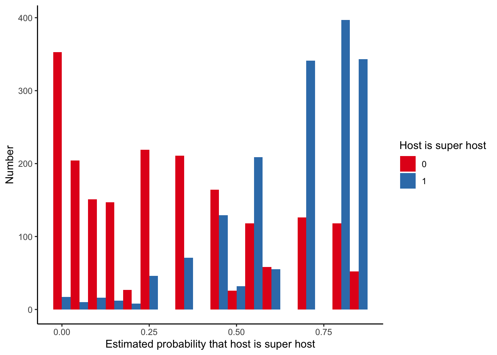

Chapter 15 Difference in differences
TODO: Replace the arm matching with https://kosukeimai.github.io/MatchIt/index.html
Required reading
- Angelucci, Charles, and Julia Cagé, 2019, ‘Newspapers in times of low advertising revenues,’ American Economic Journal: Microeconomics, vol. 11, no. 3, pp. 319-364, DOI: 10.1257/mic.20170306, available at: https://www.aeaweb.org/articles?id=10.1257/mic.20170306.
- Gertler, Paul, Sebastian Martinez, Patrick Premand, Laura Rawlings, and Christel Vermeersch, ‘Impact Evaluation in Practice,’ Chapters 7 and 8.
- Gelman, Andrew, Jennifer Hill and Aki Vehtari, 2020, Regression and Other Stories, Cambridge University Press, Chs 18 - 21.
- McElreath, Richard, 2020, Statistical Rethinking, 2nd Edition, CRC Press, Ch 14.
- Wong, Jeffrey, and Colin McFarland, 2020, ‘Computational Causal Inference at Netflix,’ Netflix Technology Blog, 11 Aug, https://netflixtechblog.com/computational-causal-inference-at-netflix-293591691c62
Required viewing
- Gelman, Andrew, 2020 ‘100 Stories of Causal Inference,’ 4 August, https://www.youtube.com/watch?v=jnI5KI843Lk.
- King, Gary, 2020, ‘Research Designs,’ Lectures on Quantitative Social Science Methods 1, freely available: https://youtu.be/27grU_VM5Ps.
- Kuriwaki, Shiro, 2020, ‘Difference-in-Differences Estimation in R (parts 1 and 2),’ 18 April, https://vimeo.com/409267138 and https://vimeo.com/409267190.
Recommended reading
- Alexander, Monica, Polimis, Kivan, and Zagheni, Emilio, 2019,’ The impact of Hurricane Maria on out-migration from Puerto Rico: Evidence from Facebook data’, Population and Development Review. (Example of using diff-in-diff to measure the effect of Hurricane Maria.)
- Alexander, Rohan, and Zachary Ward, 2018, ‘Age at arrival and assimilation during the age of mass migration,’ The Journal of Economic History, 78, no. 3, 904-937. (Example where I used differences between brothers to estimate the effect of education.)
- Angrist, Joshua D., and Jörn-Steffen Pischke, 2008, Mostly harmless econometrics: An empiricist’s companion, Princeton University Press, Chapters 3.3.2 and 5.
- Austin, Peter C., 2011, ‘An Introduction to Propensity Score Methods for Reducing the Effects of Confounding in Observational Studies,’ Multivariate Behavioral Research, vol. 46, no. 3, pp.399-424. (Broad overview of propensity score matching, with a nice discussion of the comparison to randomised controlled trials.)
- Baker, Andrew, 2019, ‘Difference-in-Differences Methodology,’ 25 September, https://andrewcbaker.netlify.app/2019/09/25/difference-in-differences-methodology/.
- Cunningham, Scott, Causal Inference: The Mixtape, chapters ‘Matching and subclassifications’ and ‘Differences-in-differences,’ http://www.scunning.com/causalinference_norap.pdf. (Very well-written notes on diff-in-diff.)
- Gelman, Andrew, and Jennifer Hill, 2007, Data Analysis Using Regression and Muiltilevel/Hierarchical Models, Chapter 10, pp. 207-212.
- King, Gary, and Richard Nielsen, 2019, ‘Why Propensity Scores Should Not Be Used for Matching,’ Political Analysis. (Academic paper on the limits of propensity score matching. Propensity score matching was a big thing in the 90s but everyone knew about these weaknesses and so it died off. Lately, there has been a resurgence because of the CS/ML folks using it without thinking so King and Nielsen wrote a nice paper about the flaws. I mean, you can’t say you weren’t warned.)
- Saeed, Sahar, Erica E. M. Moodie, Erin C. Strumpf, Marina B. Klein, 2019, ‘Evaluating the impact of health policies: using a difference-in-differences approach,’ International Journal of Public Health, 64, pp. 637–642, https://doi.org/10.1007/s00038-018-1195-2.
- Taddy, Matt, 2019, Business Data Science, Chapter 5. (Some brief notes on diff-in-diff that may appeal to some students.)
- Tang, John, 2015, ‘Pollution havens and the trade in toxic chemicals: evidence from U.S. trade flows,’ Ecological Economics, vol. 112, pp. 150-160. (Example of using diff-in-diff to estimate pollution.)
- Valencia Caicedo, Felipe. ‘The mission: Human capital transmission, economic persistence, and culture in South America.’ The Quarterly Journal of Economics 134.1 (2019): 507-556. (Data available at: Valencia Caicedo, Felipe, 2018, “Replication Data for: ‘The Mission: Human Capital Transmission, Economic Persistence, and Culture in South America’,” https://doi.org/10.7910/DVN/ML1155, Harvard Dataverse, V1.).
Key concepts/skills/etc
Difference-in-differences
- Essential matching methods.
- Weaknesses of matching.
- Difference-in-differences.
Key libraries
broomtidyverse
Key functions/etc
tidy()lm()
Pre-quiz
- Sharla Gelfand has been ‘(s)haring two #rstats functions most days - one I know and love, and one that’s new to me!’ Please go to Sharla’s GitHub page: https://github.com/sharlagelfand/twofunctionsmostdays. Please find a package that she mentions that you have never used. Please find the relevant website for the package. Please describe what the package does and a context in which it could be useful to you.
- Sharla Gelfand has been ‘(s)haring two #rstats functions most days - one I know and love, and one that’s new to me!’ Please go to Sharla’s GitHub page: https://github.com/sharlagelfand/twofunctionsmostdays. Please find a function that she mentions that you have never used. Please look at the help file for that function. Please detail the arguments of the function, and a context in which it could be useful to you.
- What is propensity score matching? If you were matching people, then what are some of the features that you would like to match on? What sort of ethical questions does collecting and storing such information raise for you?
- Putting to one side, the ethical issues, what are some statistical weaknesses with propensity score matching?
- What is the key assumption when using diff-in-diff?
- Please read the fascinating article in The Markup about car insurance algorithms: https://themarkup.org/allstates-algorithm/2020/02/25/car-insurance-suckers-list. Please read the article and tell me what you think. You may wish to focus on ethical, legal, social, statistical, or other, aspects.
- Please go to the GitHub page related to the fascinating article in The Markup about car insurance algorithms: https://github.com/the-markup/investigation-allstates-algorithm. What is great about their work? What could be improved?
15.1 Introduction
Life it grand when you can conduct experiments to be able to speak to causality. But what if you can only run the survey - you can’t run an experiment? Here we begin our discussion of the circumstances and methods that would allow you to nonetheless speak to causality. We use (relatively) simple methods, in sophisticated, well-developed, ways (cf, much of what is done these days) and our applied statistics draw from a variety of social sciences including economics, and political science.
15.2 Matching and difference-in-differences
15.2.1 Introduction
The ideal situation, as described in the previous chapter, is rarely possible in a data science setting. Can we really reasonably expect that Netflix would allow us to change prices. And even if they did once, would they let us do it again, and again, and again? Further, rarely can we explicitly create treatment and control groups. Finally, experiments are really expensive and potentially unethical. Instead, we need to make do with what we have. Rather than our counterfactual coming to us through randomisation, and hence us knowing that the two are the same but for the treatment, we try to identify groups that were similar before the treatment, and hence any differences can be attributed to the treatment. In practice, we tend to even have differences between our two groups before we treat. Provided those pre-treatment differences satisfy some assumptions (basically that they were consistent, and we expect that consistency to continue in the absence of the treatment) – the ‘parallel trends’ assumption – then we can look to any difference in the differences as the effect of the treatment. One of the lovely aspects of difference in differences analysis is that we can do it using fairly straight-forward quantitative methods - linear regression with a dummy variable is all that is needed to do a convincing job.
15.2.2 Motivation
Consider us wanting to know the effect of a new tennis racket on serve speed. One way to test this would be to measure the difference between Roger Federer’s serve speed without the tennis racket and mine with the tennis racket. Sure, we’d find a difference but how do we know how much to attribute to the tennis racket? Another way would be to consider the difference between my serve speed without the tennis racket and my serve speed with the tennis racket. But what if serves were just getting faster naturally over time? Instead, let’s combine the two to look at the difference in the differences!
In this world we measure Federer’s serve and compare it to my serve without the new racket. We then measure Federer’s serve again and measure my serve with the new racket. That difference in the differences would then be our estimate of the effect of the new racket.
What sorts of assumptions jump out at you that we are going to have to make in order for this analysis to be appropriate?
- Is there something else that may have affected only me, and not Roger that could affect my serve speed? Probably.
- Is it likely that Roger Federer and I have the same trajectory of serve speed improvement? Probably not. This is the ‘parallel trends’ assumption, and it dominates any discussion of difference in differences analysis. Finally, is it likely that the variance of our serve speeds is the same? Probably not.
Why might this be powerful? We don’t need the treatment and control group to be the same before the treatment. We just need to have a good idea of how they differ.
15.2.3 Simulated example
Let’s generate some data.
library(broom)
library(tidyverse)
set.seed(853)
diff_in_diff_example_data <- tibble(person = rep(c(1:1000), times = 2),
time = c(rep(0, times = 1000), rep(1, times = 1000)),
treatment_group = rep(sample(x = 0:1, size = 1000, replace = TRUE), times = 2)
)
# We want to make the outcome slightly more likely if they were treated than if not.
diff_in_diff_example_data <-
diff_in_diff_example_data %>%
rowwise() %>%
mutate(serve_speed = case_when(
time == 0 & treatment_group == 0 ~ rnorm(n = 1, mean = 5, sd = 1),
time == 1 & treatment_group == 0 ~ rnorm(n = 1, mean = 6, sd = 1),
time == 0 & treatment_group == 1 ~ rnorm(n = 1, mean = 8, sd = 1),
time == 1 & treatment_group == 1 ~ rnorm(n = 1, mean = 14, sd = 1),
)
)
head(diff_in_diff_example_data)## # A tibble: 6 x 4
## # Rowwise:
## person time treatment_group serve_speed
## <int> <dbl> <int> <dbl>
## 1 1 0 0 4.43
## 2 2 0 1 6.96
## 3 3 0 1 7.77
## 4 4 0 0 5.31
## 5 5 0 0 4.09
## 6 6 0 0 4.85Let’s make a graph.
diff_in_diff_example_data$treatment_group <- as.factor(diff_in_diff_example_data$treatment_group)
diff_in_diff_example_data$time <- as.factor(diff_in_diff_example_data$time)
diff_in_diff_example_data %>%
ggplot(aes(x = time,
y = serve_speed,
color = treatment_group)) +
geom_point() +
geom_line(aes(group = person), alpha = 0.2) +
theme_minimal() +
labs(x = "Time period",
y = "Serve speed",
color = "Person got a new racket") +
scale_color_brewer(palette = "Set1")
As it is a simple example, we could do this manually, by getting the average difference of the differences.
average_differences <-
diff_in_diff_example_data %>%
pivot_wider(names_from = time,
values_from = serve_speed,
names_prefix = "time_") %>%
mutate(difference = time_1 - time_0) %>%
group_by(treatment_group) %>%
summarise(average_difference = mean(difference))
average_differences$average_difference[2] - average_differences$average_difference[1]## [1] 5.058414Let’s use OLS to do the same analysis. The general regression equation is: \[Y_{i,t} = \beta_0 + \beta_1\mbox{Treatment group dummy}_i + \beta_2\mbox{Time dummy}_t + \beta_3(\mbox{Treatment group dummy} \times\mbox{Time dummy})_{i,t} + \epsilon_{i,t}\]
If we use * in the regression then it automatically includes the separate aspects as well as their interaction. It’s the estimate of \(\beta_3\) which is of interest.
diff_in_diff_example_regression <- lm(serve_speed ~ treatment_group*time,
data = diff_in_diff_example_data)
tidy(diff_in_diff_example_regression)| term | estimate | std.error | statistic | p.value |
|---|---|---|---|---|
| (Intercept) | 4.97 | 0.0428 | 116 | 0 |
| treatment_group1 | 3.03 | 0.0622 | 48.7 | 0 |
| time1 | 1.01 | 0.0605 | 16.6 | 2.97e-58 |
| treatment_group1:time1 | 5.06 | 0.088 | 57.5 | 0 |
Fortunately, our estimates are the same!
15.2.4 Assumptions
If we want to use difference in differences, then we need to satisfy the assumptions. There were three that were touched on earlier, but here I want to focus on one: the ‘parallel trends’ assumption. The parallel trends assumption haunts everything to do with diff-in-diff analysis because we can never prove it, we can just be convinced of it.
To see why we can never prove it, consider an example in which we want to know the effect of a new stadium on a professional sports team’s wins/loses. To do this we consider two teams: the Warriors and the Raptors. The Warriors changed stadiums at the start of the 2019-20 season (the Raptors did not), so we will consider four time periods: the 2016-17 season, 2017-18 season, 2018-19 season, and finally we will compare the performance with the one after they moved, so in the 2019-20 season. The Raptors here act as our counterfactual. This means that we assume the relationship between the Warriors and the Raptors, in the absence of a new stadium, would have continued to change in a consistent way. But we can never know that for certain. We have to present sufficient evidence to assuage any concerns that a reader may have.
For a variety of reasons, it is worth having tougher than normal requirements around the evidence it would take to convince you of an effect.
There are four main ‘threats to validity’ when you are using difference in differences and you should address all of these (Cunningham, 2020, pp. 272–277):
- Non-parallel trends. The treatment and control groups may be based on differences. As such it can be difficult to convincingly argue for parallel trends. In this case, maybe try to find another factor to consider in your model that may adjust for some of that. This may require difference in difference in differences (in the earlier example, perhaps could add in the San Francisco 49ers as they are in the same broad geographic area as the Warriors). Or maybe re-think your analysis to see if you can make a different control group. Adding additional earlier time periods may help but may introduce more issues (see third point).
- Compositional differences. This is a concern when working with repeated cross-sections. What if the composition of those cross-sections change? For instance, if we work at Tik Tok or some other app that is rapidly growing and want to look at the effect of some change. In our initial cross-section, we may have mostly young people, but in a subsequent cross-section, we may have more older people as the demographics of the app usage change. Hence our results may just be an age-effect, not an effect of the change that we are interested in.
- Long-term effects vs. reliability. As we discussed in the last chapter, there is a trade-off between the length of the analysis that we run. As we run the analysis for longer there is more opportunity for other factors to affect the results. There is also increased chance for someone who was not treated to be treated. But, on the other hand, it can be difficult to convincingly argue that short-term results will continue in the long-term.
- Functional form dependence. This is less of an issue when the outcomes are similar, but if they are different then functional form may be responsible for some aspects of the results.
15.2.5 Matching
This section draws on material from Gelman and Hill, 2007, pp. 207-212.
Difference in differences is a powerful analysis framework. After I learnt about it I began to see opportunities to implement it everywhere. But it can be tough to identify appropriate treatment and control groups. In Alexander and Ward, 2018, we compare migrant brothers - one of whom had most of their education in a different country, and the other who had most of their education in the US. Is this really the best match?
We may be able to match based on observable variables. For instance, age-group or education. At two different times we compare smoking rates in 18-year-olds in one city with smoking rates in 18-year-olds in another city. That is fine, but it is fairly coarse. We know that there are differences between 18-year-olds, even in terms of the variables that we commonly observe, say gender and education. One way to deal with this may be to create sub-groups: 18-year-old males with a high school education, etc. But the sample sizes are likely to quickly become small. How do we deal with continuous variables? And also, is the difference between an 18-year-old and a 19-year-old really so different? Shouldn’t we also compare with them?
One way to proceed is to consider a nearest neighbour approach. But there is limited concern for uncertainty in this approach. There is also an issue if you have a large number of variables because you end up with a high-dimension graph. This leads us to propensity score matching.
Propensity score matching involves assigning some probability to each observation. We construct that probability based on the observation’s values for the independent variables, at their values before the treatment. That probability is our best guess at the probability of the observation being treated, regardless of whether it was treated or not. For instance, if 18-year-old males were treated but 19-year-old males were not, then as there is not much difference between 18-year-old males and 19-year-old males our assigned probability would be fairly similar. We can then compare the outcomes of observations with similar propensity scores.
One advantage of propensity score matching is that is allows us to easily consider many independent variables at once, and it can be constructed using logistic regression.
Let’s generate some data to illustrate propensity score matching. Let’s pretend that we work for Amazon. We are going to treat some individuals with free-shipping to see what happens to their average purchase.
library(tidyverse)sample_size <- 10000
set.seed(853)
amazon_purchase_data <-
tibble(
unique_person_id = c(1:sample_size),
age = runif(n = sample_size,
min = 18,
max = 100),
city = sample(
x = c("Toronto", "Montreal", "Calgary"),
size = sample_size,
replace = TRUE
),
gender = sample(
x = c("Female", "Male", "Other/decline"),
size = sample_size,
replace = TRUE,
prob = c(0.49, 0.47, 0.02)
),
income = rlnorm(n = sample_size,
meanlog = 0.5,
sdlog = 1)
)Now we need to add some probability of being treated with free shipping, which depends on our variables. Younger, higher-income, male and in Toronto all make it slightly more likely.
amazon_purchase_data <-
amazon_purchase_data %>%
mutate(age_num = case_when(
age < 30 ~ 3,
age < 50 ~ 2,
age < 70 ~ 1,
TRUE ~ 0),
city_num = case_when(
city == "Toronto" ~ 3,
city == "Montreal" ~ 2,
city == "Calgary" ~ 1,
TRUE ~ 0),
gender_num = case_when(
gender == "Male" ~ 3,
gender == "Female" ~ 2,
gender == "Other/decline" ~ 1,
TRUE ~ 0),
income_num = case_when(
income > 3 ~ 3,
income > 2 ~ 2,
income > 1 ~ 1,
TRUE ~ 0)
) %>%
rowwise() %>%
mutate(sum_num = sum(age_num, city_num, gender_num, income_num),
softmax_prob = exp(sum_num)/exp(12),
free_shipping = sample(
x = c(0:1),
size = 1,
replace = TRUE,
prob = c(1-softmax_prob, softmax_prob)
)
) %>%
ungroup()
amazon_purchase_data <-
amazon_purchase_data %>%
dplyr::select(-age_num, -city_num, -gender_num, -income_num, -sum_num, -softmax_prob)Finally, we need to have some measure of a person’s average spend. We want those with free shipping to be slightly higher than those without.
amazon_purchase_data <-
amazon_purchase_data %>%
mutate(mean_spend = if_else(free_shipping == 1, 60, 50)) %>%
rowwise() %>%
mutate(average_spend = rnorm(1, mean_spend, sd = 5)
) %>%
ungroup() %>%
dplyr::select(-mean_spend)
# Fix the class on some
amazon_purchase_data <-
amazon_purchase_data %>%
mutate_at(vars(city, gender, free_shipping), ~as.factor(.)) # Change some to factorstable(amazon_purchase_data$free_shipping)##
## 0 1
## 9629 371head(amazon_purchase_data)| unique_person_id | age | city | gender | income | free_shipping | average_spend |
|---|---|---|---|---|---|---|
| 1 | 47.5 | Calgary | Female | 1.72 | 0 | 41.1 |
| 2 | 27.8 | Montreal | Male | 1.54 | 0 | 55.7 |
| 3 | 57.7 | Toronto | Female | 3.16 | 0 | 56.5 |
| 4 | 43.9 | Toronto | Male | 0.636 | 0 | 50.5 |
| 5 | 21.1 | Toronto | Female | 1.43 | 0 | 44.7 |
| 6 | 51.1 | Calgary | Male | 1.18 | 0 | 48.8 |
Now we construct a logistic regression model that ‘explains’ whether a person was treated as a function of the variables that we think explain it.
propensity_score <- glm(free_shipping ~ age + city + gender + income,
family = binomial,
data = amazon_purchase_data)We will now add our forecast to our dataset.
amazon_purchase_data <-
augment(propensity_score,
data = amazon_purchase_data,
type.predict = "response") %>%
dplyr::select(-.resid, -.std.resid, -.hat, -.sigma, -.cooksd) Now we use our forecast to create matches. There are a variety of ways to do this. In a moment I’ll step through some code that does it all at once, but as this is a worked example and we only have a small number of possibilities, we can just do it manually.
For every person who was actually treated (given free shipping) we want the untreated person who was considered as similar to them (based on propensity score) as possible.
amazon_purchase_data <-
amazon_purchase_data %>%
arrange(.fitted, free_shipping)Here we’re going to use a matching function from the arm package. This finds which is the closest of the ones that were not treated, to each one that was treated.
amazon_purchase_data$treated <- if_else(amazon_purchase_data$free_shipping == 0, 0, 1)
amazon_purchase_data$treated <- as.integer(amazon_purchase_data$treated)
matches <- arm::matching(z = amazon_purchase_data$treated, score = amazon_purchase_data$.fitted)
amazon_purchase_data <- cbind(amazon_purchase_data, matches)Now we reduce the dataset to just those that are matched. We had 371 treated, so we expect a dataset of 742 observations.
amazon_purchase_data_matched <-
amazon_purchase_data %>%
filter(match.ind != 0) %>%
dplyr::select(-match.ind, -pairs, -treated)
head(amazon_purchase_data_matched)| unique_person_id | age | city | gender | income | free_shipping | average_spend | .fitted | cnts |
|---|---|---|---|---|---|---|---|---|
| 5710 | 81.2 | Montreal | Female | 0.675 | 0 | 47.4 | 0.00138 | 1 |
| 9458 | 97 | Montreal | Female | 9.5 | 1 | 61.2 | 0.00138 | 1 |
| 6428 | 83.2 | Calgary | Male | 0.0585 | 0 | 49.9 | 0.00156 | 1 |
| 2022 | 99 | Montreal | Male | 1.67 | 1 | 57.8 | 0.00156 | 1 |
| 9824 | 64.6 | Calgary | Female | 3.35 | 1 | 64.7 | 0.00221 | 1 |
| 1272 | 97.1 | Toronto | Female | 0.718 | 0 | 56.6 | 0.00221 | 1 |
Finally, we can examine the ‘effect’ of being treated on average spend in the ‘usual’ way.
propensity_score_regression <- lm(average_spend ~ age + city + gender + income + free_shipping,
data = amazon_purchase_data_matched)huxtable::huxreg(propensity_score_regression)| (1) | |
|---|---|
| (Intercept) | 49.694 *** |
| (0.809) | |
| age | 0.005 |
| (0.011) | |
| cityMontreal | 0.169 |
| (0.734) | |
| cityToronto | 0.652 |
| (0.623) | |
| genderMale | -0.968 * |
| (0.422) | |
| genderOther/decline | -1.973 |
| (2.621) | |
| income | 0.009 |
| (0.021) | |
| free_shipping1 | 10.488 *** |
| (0.380) | |
| N | 742 |
| R2 | 0.513 |
| logLik | -2267.486 |
| AIC | 4552.971 |
| *** p < 0.001; ** p < 0.01; * p < 0.05. | |
I cover propensity score matching here because it is widely used. Hence, you need to know how to use it. People would think it’s weird if you didn’t, in the same way that we have to cover ANOVA people would think it’s weird if we had an entire experimental design course and didn’t cover it even though there are more modern ways of looking at differences between two means. But at the same time you need to know that there are flaws with propensity score matching. I will now discuss some of them.
- Matching. Propensity score matching cannot match on unobserved variables. This may be fine in a class-room setting, but in more realistic settings it will likely cause issues.
- Modelling. The results tend to be specific to the model that is used. King and Nielsen, 2019, discuss this thoroughly.
- Statistically. We are using the data twice.
15.3 Case study - Lower advertising revenue reduced French newspaper prices between 1960 and 1974
Required reading
- Angelucci, Charles, and Julia Cagé, 2019, ‘Newspapers in times of low advertising revenues,’ American Economic Journal: Microeconomics, vol. 11, no. 3, pp. 319-364, DOI: 10.1257/mic.20170306, available at: https://www.aeaweb.org/articles?id=10.1257/mic.20170306.
Key concepts/skills/etc
- Reading in foreign data.
- Difference in differences.
- Replicating work.
- Displaying multiple regression results.
- Discussing results.
Key libraries
havenhuxtablescalestidyverse
Key functions/etc
dollar_format()hux_reg()lm()mutate_at()read_dta()
15.3.1 Introduction
In this case study we introduce Angelucci and Cagé, 2019, and replicate its main findings. Angelucci and Cagé, 2019, is a paper in which difference in differences is used to examine the effect of the reduction in advertising revenues on newspapers’ content and prices. They create a dataset of ‘French newspapers between 1960 and 1974.’ They ‘perform a difference-in-differences analysis’ and exploit ‘the introduction of advertising on television’ as this change ‘affected national newspapers more severely than local ones.’ They ‘find robust evidence of a decrease in the amount of journalistic-intensive content produced and the subscription price.’
In order to conduct this analysis we will use the dataset that they provide alongside their paper. This dataset is available at: https://www.openicpsr.org/openicpsr/project/116438/version/V1/view. It is available for you to download after registration. As their dataset is in Stata data format, we will use the haven package to read it in (Wickham and Miller, 2019).
library(here)
library(haven)
library(huxtable)
library(scales)
library(tidyverse)15.3.2 Background
Newspapers are in trouble. We can probably all think of a local newspaper that has closed recently because of pressure brought on by the internet. But this issue isn’t new. When television started, there were similar concerns. In this paper, Angelucci and Cagé use the introduction of television advertising in France, announced in 1967, to examine the effect of decreased advertising revenue on newspapers.
The reason this is important is because it allows us to disentangle a few competing effects. For instance, are newspapers becoming redundant because they can no longer charge high prices for their ads or because consumers prefer to get their news in other ways? Are fewer journalists needed because smartphones and other technology mean they can be more productive? Angelucci and Cagé look at advertising revenue and a few other features, when a new advertising platform arrives, in this case television advertising.
15.3.3 Data
(The) dataset contains annual data on local and national newspapers between 1960 and 1974, as well as detailed information on television content. In 1967, the French government announced it would relax long-standing regulations that prohibited television advertising. We provide evidence that this reform can be plausibly interpreted as an exogenous and negative shock to the advertising side of the newspaper industry… [I]t is likely that the introduction of television advertising constituted a direct shock to the advertising side of the newspaper industry and only an indirect shock to the reader side… (O)ur empirical setting constitutes a unique opportunity to isolate the consequences of a decrease in newspapers’ advertising revenues on their choices regarding the size of their newsroom, the amount of information to produce, and the prices they charge to both sides of the market.
The authors’ argue that national newspapers were affected by the television advertising change, but local newspapers were not. So the national newspapers are the treatment group and the local newspapers are the control group.
The dataset can be read in using read_dta(), which is a function within the haven package for reading in Stata dta files. This is equivalent to read_csv().
newspapers <- read_dta(here::here("inputs/data/116438-V1/data/dta/Angelucci_Cage_AEJMicro_dataset.dta"))
dim(newspapers)## [1] 1196 52There are 1,196 observations in the dataset and 52 variables. The authors are interested in the 1960-1974 time period which has around 100 newspapers. There are 14 national newspapers at the beginning of the period and 12 at the end.
We just want to replicate their main results, so we don’t need all their variables. As such we will just select() the ones that we are interested in and change the class() where needed.
newspapers <-
newspapers %>%
dplyr::select(year, id_news, after_national, local, national, # Diff in diff variables
ra_cst, qtotal, ads_p4_cst, ads_s, # Advertising side dependents
ps_cst, po_cst, qtotal, qs_s, rs_cst) %>% #Reader side dependents
mutate(ra_cst_div_qtotal = ra_cst / qtotal) %>% # An advertising side dependents needs to be built
mutate_at(vars(id_news, after_national, local, national), ~as.factor(.)) %>% # Change some to factors
mutate(year = as.integer(year))We can now have a look at the main variables of interest for both national (Figure 15.1) and local daily newspapers (Figure 15.2).

Figure 15.1: Angelucci and Cagé, 2019, summary statistics: national daily newspapers
Source: Angelucci and Cagé, 2019, p. 333.

Figure 15.2: Angelucci and Cagé, 2019, summary statistics: local daily newspapers
Source: Angelucci and Cagé, 2019, p. 334.
Please read this section of their paper to see how they describe their dataset.
We are interested in the change from 1967 onward.
newspapers %>%
mutate(type = if_else(local == 1, "Local", "National")) %>%
ggplot(aes(x = year, y = ra_cst)) +
geom_point(alpha = 0.5) +
scale_y_continuous(labels = dollar_format(prefix="$", suffix = "M", scale = 0.000001)) +
labs(x = "Year",
y = "Advertising revenue") +
facet_wrap(vars(type),
nrow = 2) +
theme_classic() +
geom_vline(xintercept = 1966.5, linetype = "dashed")
15.3.4 Model
The model that we are interested in estimating is: \[\mbox{ln}(y_{n,t}) = \beta_0 + \beta_1(\mbox{National dummy}\times\mbox{1967 onward dummy}) + \lambda_n + \gamma_y + \epsilon.\] The \(\lambda_n\) is a fixed effect for each newspaper, and the \(\gamma_y\) is a fixed effect for each year. We just use regular linear regression, with a few different dependent variables. It is the \(\beta_1\) coefficient that we are interested in.
15.3.5 Results
We can run the models using lm().
# Advertising side
ad_revenue <- lm(log(ra_cst) ~ after_national + id_news + year, data = newspapers)
ad_revenue_div_circulation <- lm(log(ra_cst_div_qtotal) ~ after_national + id_news + year, data = newspapers)
ad_price <- lm(log(ads_p4_cst) ~ after_national + id_news + year, data = newspapers)
ad_space <- lm(log(ads_s) ~ after_national + id_news + year, data = newspapers)
# Consumer side
subscription_price <- lm(log(ps_cst) ~ after_national + id_news + year, data = newspapers)
unit_price <- lm(log(po_cst) ~ after_national + id_news + year, data = newspapers)
circulation <- lm(log(qtotal) ~ after_national + id_news + year, data = newspapers)
share_of_sub <- lm(log(qs_s) ~ after_national + id_news + year, data = newspapers)
revenue_from_sales <- lm(log(rs_cst) ~ after_national + id_news + year, data = newspapers)Looking at the advertising-side variables.
omit_me <- c("(Intercept)", "id_news3", "id_news6", "id_news7", "id_news13",
"id_news16", "id_news25", "id_news28", "id_news34", "id_news38",
"id_news44", "id_news48", "id_news51", "id_news53", "id_news54",
"id_news57", "id_news60", "id_news62", "id_news66", "id_news67",
"id_news70", "id_news71", "id_news72", "id_news80", "id_news82",
"id_news88", "id_news95", "id_news97", "id_news98", "id_news103",
"id_news105", "id_news106", "id_news118", "id_news119", "id_news127",
"id_news136", "id_news138", "id_news148", "id_news151", "id_news153",
"id_news154", "id_news157", "id_news158", "id_news161", "id_news163",
"id_news167", "id_news169", "id_news179", "id_news184", "id_news185",
"id_news187", "id_news196", "id_news206", "id_news210", "id_news212",
"id_news213", "id_news224", "id_news225", "id_news234", "id_news236",
"id_news245", "id_news247", "id_news310", "id_news452", "id_news467",
"id_news469", "id_news480", "id_news20040", "id_news20345",
"id_news20346", "id_news20347", "id_news20352", "id_news20354",
"id_news21006", "id_news21025", "id_news21173", "id_news21176",
"id_news33718", "id_news34689", "id_news73")
huxreg("Ad. rev." = ad_revenue,
"Ad rev. div. circ." = ad_revenue_div_circulation,
"Ad price" = ad_price,
"Ad space" = ad_space,
omit_coefs = omit_me,
number_format = 2
)| Ad. rev. | Ad rev. div. circ. | Ad price | Ad space | |
|---|---|---|---|---|
| after_national1 | -0.23 *** | -0.15 *** | -0.31 *** | 0.01 |
| (0.03) | (0.03) | (0.07) | (0.05) | |
| year | 0.05 *** | 0.04 *** | 0.04 *** | 0.02 *** |
| (0.00) | (0.00) | (0.00) | (0.00) | |
| N | 1052 | 1048 | 809 | 1046 |
| R2 | 0.99 | 0.90 | 0.89 | 0.72 |
| logLik | 345.34 | 449.52 | -277.71 | -164.01 |
| AIC | -526.68 | -735.05 | 705.43 | 478.02 |
| *** p < 0.001; ** p < 0.01; * p < 0.05. | ||||
Similarly, we can look at the reader-side variables.
omit_me <- c("(Intercept)", "id_news3", "id_news6", "id_news7", "id_news13",
"id_news16", "id_news25", "id_news28", "id_news34", "id_news38",
"id_news44", "id_news48", "id_news51", "id_news53", "id_news54",
"id_news57", "id_news60", "id_news62", "id_news66", "id_news67",
"id_news70", "id_news71", "id_news72", "id_news80", "id_news82",
"id_news88", "id_news95", "id_news97", "id_news98", "id_news103",
"id_news105", "id_news106", "id_news118", "id_news119", "id_news127",
"id_news136", "id_news138", "id_news148", "id_news151", "id_news153",
"id_news154", "id_news157", "id_news158", "id_news161", "id_news163",
"id_news167", "id_news169", "id_news179", "id_news184", "id_news185",
"id_news187", "id_news196", "id_news206", "id_news210", "id_news212",
"id_news213", "id_news224", "id_news225", "id_news234", "id_news236",
"id_news245", "id_news247", "id_news310", "id_news452", "id_news467",
"id_news469", "id_news480", "id_news20040", "id_news20345",
"id_news20346", "id_news20347", "id_news20352", "id_news20354",
"id_news21006", "id_news21025", "id_news21173", "id_news21176",
"id_news33718", "id_news34689", "id_news73")
huxreg("Subscription price" = subscription_price,
"Unit price" = unit_price,
"Circulation" = circulation,
"Share of sub" = share_of_sub,
"Revenue from sales" = revenue_from_sales,
omit_coefs = omit_me,
number_format = 2
)| Subscription price | Unit price | Circulation | Share of sub | Revenue from sales | |
|---|---|---|---|---|---|
| after_national1 | -0.04 * | 0.06 ** | -0.06 ** | 0.19 *** | -0.06 * |
| (0.02) | (0.02) | (0.02) | (0.03) | (0.03) | |
| year | 0.05 *** | 0.05 *** | 0.01 *** | -0.01 *** | 0.05 *** |
| (0.00) | (0.00) | (0.00) | (0.00) | (0.00) | |
| N | 1044 | 1063 | 1070 | 1072 | 1046 |
| R2 | 0.88 | 0.87 | 0.99 | 0.97 | 0.99 |
| logLik | 882.14 | 907.28 | 759.57 | 321.91 | 451.11 |
| AIC | -1600.28 | -1650.57 | -1355.15 | -477.81 | -738.22 |
| *** p < 0.001; ** p < 0.01; * p < 0.05. | |||||
15.3.6 Other points
- We certainly find that in many cases there appears to be a difference from 1967 onward.
- In general, we are able to obtain results that are similar to Angelucci and Cagé, 2019. If we spent more time, we could probably replicate their findings perfectly. Isn’t this great! What else could do?
- Parallel trends: Notice the wonderful way in which they test the ‘parallel trends’ assumption on pp. 350-351.
- Discussion: Look at their wonderful discussion (pp. 353-358) of interpretation, external validity, and robustness.